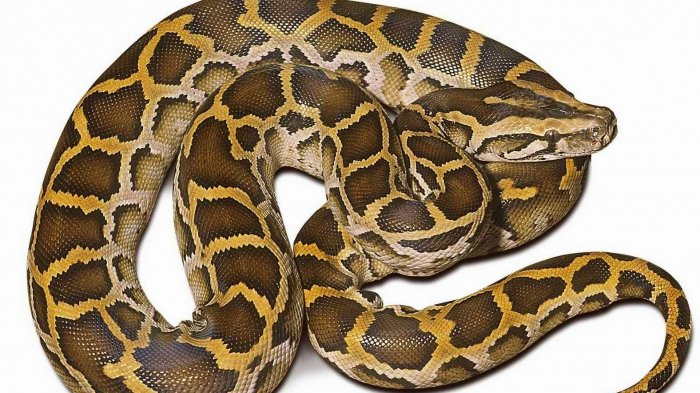

Interaksi Makhluk Hidup dengan Lingkungannya
Tujuan Pembelajaran :
a. Tanah
Tanah adalah faktor abiotik yang tersusun oleh kombinasi mineral, air, udara, dan bahan organik yang berasal dari pengurai tumbuhan atau hewan. Perbedaan zat penyusun tanah akan menghasilkan jenis tanah yang berbeda. Jenis tanah akan memengaruhi jenis makhluk hidup yang berada pada ekosistem. Di tanah yang tandus akan ditemukan sedikit organisme. Adapun didaerah yang tanahnya subur dan gembur akan ditemukan banyak organisme.
b. Temperatur/suhu
Temperatur atau suhu ikut menentukan jenis organisme yang dapat hidup di sustu tempat tertentu. Pada daerah dingin atau bersalju akan ditemukan burung penguin, panda, dan beruang salju. Burung penguin, panda, dan beruang salju tidak akan ditemukan gurun atau padan pasir yang suhunya panas. Di padang pasir akan ditemukan unta dan pohon kurma. Suhu memengaruhi reaksi biokimiawi di dalam tubuh. Suhu yang terlalu rendah atau terlalu tinggi dapat menyebabkan gangguan pada reaksi-reaksi biokimiawi didalam tubuh, sehingga aktivitasnya terganggu. Oleh karena itu, setiap makhluk hidup membutuhkan sushu optimum untuk pertumbuhan dan perkembangannya.
c. air
Temperatur atau suhu ikut menentukan jenis organisme yang dapat hidup di sustu tempat tertentu. Pada daerah dingin atau bersalju akan ditemukan burung penguin, panda, dan beruang salju. Burung penguin, panda, dan beruang salju tidak akan ditemukan gurun atau padan pasir yang suhunya panas. Di padang pasir akan ditemukan unta dan pohon kurma. Suhu memengaruhi reaksi biokimiawi di dalam tubuh. Suhu yang terlalu rendah atau terlalu tinggi dapat menyebabkan gangguan pada reaksi-reaksi biokimiawi didalam tubuh, sehingga aktivitasnya terganggu. Oleh karena itu, setiap makhluk hidup membutuhkan suhu optimum untuk pertumbuhan dan perkembangannya.
d. Sinar Matahari
Sinar matahari sebagai sumber energi utama bagi semua organisme yang ada dibumi. Sinar matahari diserap tumbuhan untuk melakukan fotosintesis. Fotosintesis menghasilkan makanan dan oksigen yang diperlukan bagi kehidupan. Sinar matahari sangat memengaruhi suhu lingkungan dan suhu lingkungan sangat memengaruhi terhadap kehidupan organisme.
e. Udara
Udara merupakan komponen abiotik yang sangat diperlukan makhluk hidup. Hewan dan manusia menggunakan oksigen yang terdapat di udara untuk bernapas dan mengeluarkan karbon dioksida ke udara. Sedangkan, tumbuhan mengambil karbon dioksida dari udara untuk proses fotosintesis dan menghasilkan oksigen sebagai produk sampinagan. Oksigen dilepaskan ke udara untuk di gunakan oleh semua makhluk hidup. Dengan demikian, terjadilah perputaran zat yang berlangsung terus menerus. Peristiwa ini menunjukan adanya saling ketergantungan dan saling membutuhkan antara makhluk hidup dan lingkungannya.
Tanah adalah faktor abiotik yang tersusun oleh kombinasi mineral, air, udara, dan bahan organik yang berasal dari pengurai tumbuhan atau hewan. Perbedaan zat penyusun tanah akan menghasilkan jenis tanah yang berbeda. Jenis tanah akan memengaruhi jenis makhluk hidup yang berada pada ekosistem. Di tanah yang tandus akan ditemukan sedikit organisme. Adapun didaerah yang tanahnya subur dan gembur akan ditemukan banyak organisme.
b. Temperatur/suhu
Temperatur atau suhu ikut menentukan jenis organisme yang dapat hidup di sustu tempat tertentu. Pada daerah dingin atau bersalju akan ditemukan burung penguin, panda, dan beruang salju. Burung penguin, panda, dan beruang salju tidak akan ditemukan gurun atau padan pasir yang suhunya panas. Di padang pasir akan ditemukan unta dan pohon kurma. Suhu memengaruhi reaksi biokimiawi di dalam tubuh. Suhu yang terlalu rendah atau terlalu tinggi dapat menyebabkan gangguan pada reaksi-reaksi biokimiawi didalam tubuh, sehingga aktivitasnya terganggu. Oleh karena itu, setiap makhluk hidup membutuhkan sushu optimum untuk pertumbuhan dan perkembangannya.
c. air
Temperatur atau suhu ikut menentukan jenis organisme yang dapat hidup di sustu tempat tertentu. Pada daerah dingin atau bersalju akan ditemukan burung penguin, panda, dan beruang salju. Burung penguin, panda, dan beruang salju tidak akan ditemukan gurun atau padan pasir yang suhunya panas. Di padang pasir akan ditemukan unta dan pohon kurma. Suhu memengaruhi reaksi biokimiawi di dalam tubuh. Suhu yang terlalu rendah atau terlalu tinggi dapat menyebabkan gangguan pada reaksi-reaksi biokimiawi didalam tubuh, sehingga aktivitasnya terganggu. Oleh karena itu, setiap makhluk hidup membutuhkan suhu optimum untuk pertumbuhan dan perkembangannya.
d. Sinar Matahari
Sinar matahari sebagai sumber energi utama bagi semua organisme yang ada dibumi. Sinar matahari diserap tumbuhan untuk melakukan fotosintesis. Fotosintesis menghasilkan makanan dan oksigen yang diperlukan bagi kehidupan. Sinar matahari sangat memengaruhi suhu lingkungan dan suhu lingkungan sangat memengaruhi terhadap kehidupan organisme.
e. Udara
Udara merupakan komponen abiotik yang sangat diperlukan makhluk hidup. Hewan dan manusia menggunakan oksigen yang terdapat di udara untuk bernapas dan mengeluarkan karbon dioksida ke udara. Sedangkan, tumbuhan mengambil karbon dioksida dari udara untuk proses fotosintesis dan menghasilkan oksigen sebagai produk sampinagan. Oksigen dilepaskan ke udara untuk di gunakan oleh semua makhluk hidup. Dengan demikian, terjadilah perputaran zat yang berlangsung terus menerus. Peristiwa ini menunjukan adanya saling ketergantungan dan saling membutuhkan antara makhluk hidup dan lingkungannya.
